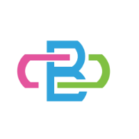
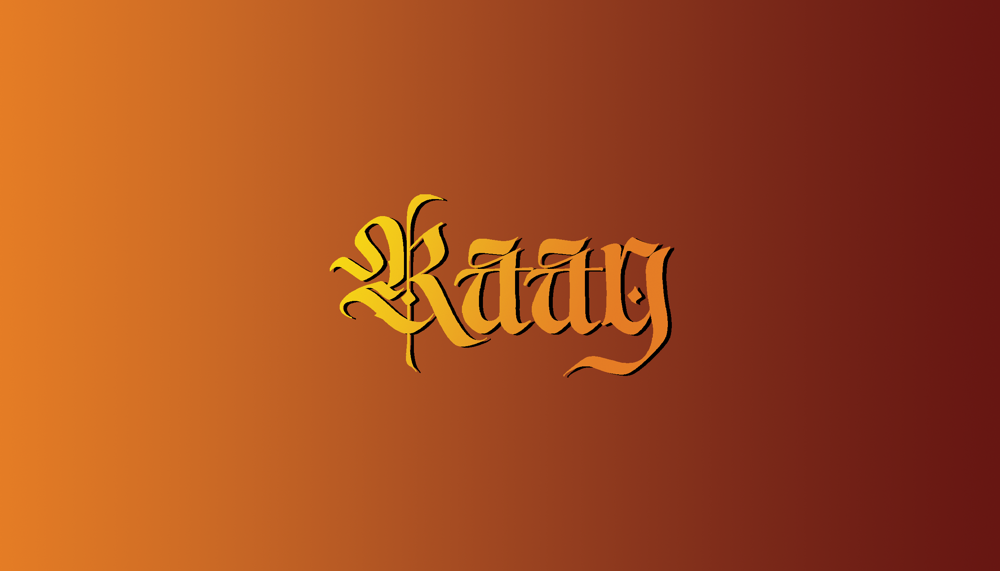

R.K. Motors
Worked across procurement, inventory management and operational data.
R
BUSINESS STRATEGY · TECHNOLOGY · OPERATIONS
I’m Deep Kumar — a business professional interested in how organisations compete, make decisions and transform the way they work.
Based in India · Incoming PGDM ExP, IMT Ghaziabad
My experience spans business analysis, product management, entrepreneurship and operations. Working across technology-led products and operational environments has shaped my interest in the choices that help organisations create lasting value.
I’m particularly interested in corporate strategy, competitive intelligence, digital transformation and operational excellence. I enjoy unpacking complex business questions, evaluating alternatives and understanding how data, technology and organisational capabilities shape outcomes.
Connect on LinkedInIndependent research on industries, markets, business models and the forces shaping competitive advantage.
Industry and market analyses will be published here with sources, assumptions and clear distinctions between evidence and interpretation.
Writing on strategy, management, technology and the practical realities of building and running organisations.
Expect considered arguments, useful frameworks and grounded perspectives—not content for the sake of posting.
A case study is more than a company story. It is an opportunity to examine a decision, understand the alternatives and question what could have been done differently.
Context & the central problem
Root causes & strategic choices
Execution, outcomes & trade-offs
Lessons & my point of view
Detailed case studies will appear here as they are published.
Experience across technology-led products, entrepreneurship and operational environments.
Worked across procurement, inventory management and operational data.
Worked on a food R&D SaaS platform, translating user and business needs into product requirements and improvements.

Connected client stakeholders, engineering, design and QA teams on digital tools for food R&D workflows.
Co-founded an e-commerce venture connecting artisans and buyers; developed the concept, MVP and early marketplace operations.

A TOOL I’M BUILDING
StrategyDeck is a presentation tool designed to turn structured business inputs into clear, editable PowerPoint narratives.
I’m always glad to connect with people working on interesting business problems, ideas and transformations.
dkr7836@gmail.com